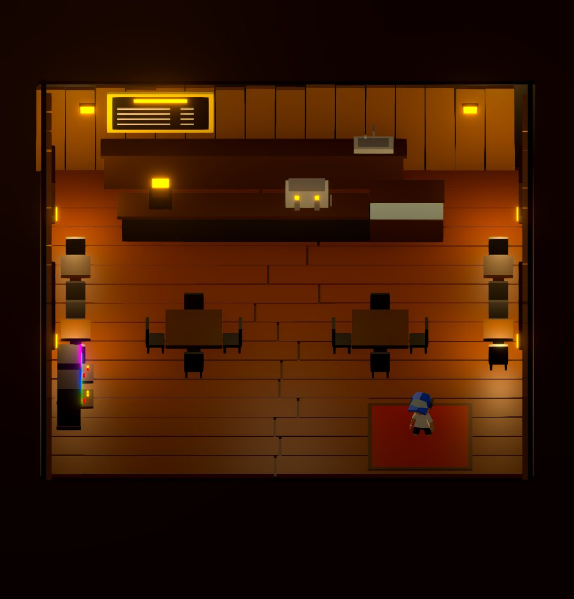

High-level log — decisions made and what changed. Deeper technical detail lives in the code and in Claude's memory, not here. Milestone screenshots go in journal-assets/ (saved from the running dev app via the /__save-shot endpoint) and embed with a <figure>.
NPC pipeline decision. Characters stay unique-mesh → Mixamo → per-person GLB (duplicate Blender collection, edit mesh, Mixamo anim, build script). No shared-rig / recolour system. Scale by loading per map (don't preload café people on the town homepage), cloning when the mesh is the same (baristas already do), and watching Mixamo export size — not by forcing one skeleton for everyone.
House balcony ribbon is real glass now. That mid-height band was a flat solid palette swatch (read as a bright white lightbox). Glass is the sanctioned exception to the single-palette rule (it's a shader need — transmission/reflection — not matte colour), so it gets its own reusable Glass material, mirroring how Water works. All 5 faces of the ledge (not just the front) are on it, exported via KHR_materials_transmission; renders clean in three.js — no streaking, unlike the water scare. Clear glass was near-invisible against the warm scene, so the final look is frosty translucent blue (transmission 0.55, roughness 0.5, deep-blue base) — the blue diffuse actually reads now instead of washing out. Reuse this Glass datablock for any future glazing.
House window glow was blowing out — dimmed it in three.js, not Blender. Dropped houseGlow 1.0 → 0.3 in LIGHTING_DEFAULTS so the lit panes read as warm windows, not white light sources. The lever lives in three.js on purpose: the Blender emission is global/shared and the bloom halo doesn't exist in Blender at all. houseGlow multiplies only HouseWindowsLit; café glass is on its own cafeGlow. Live-tunable via ?debug ("House glow", "Bloom").
New opening cinematic — the intro modal is gone. Instead of the "Enter the town" card, the game boots straight into a camera move: eye-level among the southern pines, a perspective pan north through the forest onto the character, then it reaches him and zooms out — the projection morphing perspective→orthographic — landing exactly on the normal gameplay framing, at which point it hands over control (no button). It's the one place the locked 3/4 ortho contract is deliberately broken, then restored. Key ideas that made it clean: (1) it's the same camera throughout (an OrthographicCamera we override with a perspective projection during the intro) — swapping camera objects re-inits the post composer and flashes black; (2) the pan ends on the ortho camera's exact view axis, so the final hop to the perch is invisible to an ortho camera → no swing/nausea; (3) reach-and-zoom-out is one continuous move, never freezing on the character. All in OrthoRig.tsx; tuning knobs (FLY: path, dur, flattenFrom, tiltEnd).
Intro follow-up — killed a gold band at the bottom during the zoom-out. Caught on prod (wide window): a flat gold band flashed along the bottom as it flattened to ortho. Cause — the zoom-out morphed the projection straight from a close-up (framing ~6 units) to ortho (18), a big framing jump; mid-morph the frame widened past where the ground covers and revealed the sky gradient (its bottom is gold #f5d497), aspect-dependent so wide windows hit it. Fix: do the zoom-out as a real perspective dolly back along the view axis (a frustum that always looks down at the ground → no reveal); only flatten perspective→ortho over the short tail, by which point the perspective already frames ~18 units, so it's a near-identity flatten with no band. Still lands exactly on the ortho camera.
Bug: character sometimes spawned at the café, not home. Chased a "why is he by the café?" report to InteriorController, whose town↔café teleport guarded against running on mount with a first-mount boolean ref. React StrictMode double-invokes effects in dev: the first invocation flipped the guard, the second fell through and fired the café-exit teleport to townReturn (12.2, 2.2). Intermittent because town.glb's Suspense load shifted the mount timing (bit on the ~third refresh once cached). Dev-only (StrictMode doesn't double-invoke in prod), but a real latent bug. Fix: guard on the actualinterior value changing (compare previous value), which is idempotent under StrictMode. Lesson: don't use first-mount boolean guards for "skip on mount" — compare state instead.
Pac-Man SFX. Wired the four clips in assets/Game sound/pacman: eat on each pellet, special on a power pellet or eaten ghost, lose on a life, win when the board is clear. Pause mutes them mid-sting; leaving the maze stops them. Café BGM already fades out for the minigame.
Pac-Man maze materials. Floor/walls/pellets were flat Lambert cardboard. They're PBR now (standard floor + physical walls with a canvas bevel-normal and clearcoat, emissive pellets) sharing one material per kind — same grid, just looks like polished arcade blocks. Metalness needs an env map to read, so a tiny baked studio cubemap (same trick as the river) sits on those materials only. Wall shadows were already on; they finally show because the floor isn't crushed to black.
Slightly imperfect maze walls. The PBR blocks were still a perfect grid of identical cubes. Each wall is now a seeded nudge — a few centimetres off-grid, a couple of degrees of yaw/tilt, and a bit of height/footprint scatter — so long runs read as stacked stones instead of one machined plane. Collision is still the grid.
Audio payload cut. Birds/river/café BGM were 2–3 minute stereo ~200 kbps beds (~13.5MB) fetched on boot. They're short AAC loops now (16s mono birds ~130K, 12s mono river ~97K, 90s stereo café ~1.1MB). Town ambience only constructs after "Enter the town"; café BGM only fetches on the first café visit. Unused hidden-valley.mp3 stays in the repo but isn't imported.
Scaling worries (maps / NPCs / minigames / store). Frame rate is not the first bottleneck. Town already sits ~75–82 fps with JS ~90% idle and ~120 draw calls / ~120k tris; the tax is pixels (N8AO + Bloom + SMAA at dpr up to 2 on a big Retina screen). A second live tab halves it. Don't worry yet about Imphenzia triangle counts, forest instancing, a handful of extra maps if they load on enter, or a handful of café NPCs. Do worry about:
Fill rate. Cap DPR on large screens (1.25–1.5) before adding worlds. No second post stack, extra shadow-casting suns, or a second <Canvas> for minigames.
Load time, not fps.town.glb is ~515K; audio is the payload (birds ~6MB, café BGM ~4MB, river ~3.4MB) and the cat GLB is ~2.1MB. Each patron is its own GLB and they preload on module load — ten maps × ten unique NPCs × preload-everything is how the homepage dies on a phone. Keep one Canvas, swap the world, dispose shadows/env maps, don't keep town mounted under the café, don't merge maps into one mega GLB.
NPCs. A few Mixamo clones are cheap. What scales badly: one GLB per character, unique skeletons/mixers on every body, everyone casting VSM shadows, preloading NPCs for maps you haven't entered. Share one rig, recolour/swap meshes, instance idle sitters, animate what's on screen, no per-NPC lights.
Minigames. Pac-Man is the right shape (same camera, same character, town unmounted). Don't treat each game as a mini engine, and don't leave café + maze both rendering.
Phones. iOS already can't run the composer (black blobs). Every new map/minigame needs an iPhone pass, not just ?debug on the Studio.
Store. Checkout as HTML on a paused or DPR-dropped scene, not a 3D register. Stripe (or similar); inventory/shipping/tax/returns matter more than merch crates in the GLB. Don't preload the catalogue into WebGL.
Cheap insurance. Cap DPR on large screens; stop preloading unused maps/NPCs; keep one shared character pipeline; pause the WebGL loop on the shop and when the tab is hidden.
First café patron. A new seated character (patron-1) now sits at one of the two-top tables against the café's left wall, facing the room. Built from a single "sit & talk" Mixamo FBX via a new tools/build-patron.py (same in-place retarget pipeline as the baristas), rendered by a stationary Patron actor that just loops the seated clip.
Placement is data in CAFE.patrons (chair spot + facing), so more customers are a one-line add. The sit clip is a low sit; left yFix=0 because that lands the torso at table height (raising it would float the torso above the table) — the chair-height mismatch hides behind the body.
Second patron (patron-2), sitting opposite. A cross-legged sitter now shares the same left-wall table, facing patron-1 across it. Generalised build-patron.py to take a patron id (-- patron-2) and the Patron actor to take a per-patron model, so each customer is its own GLB + one config line.
Turned the café background music down (it was a bit loud).
The river flows and reflects the sky now. The water was a dead matte-blue slab. Two three.js fixes: (1) flow — a vertex shader ripples the low-poly facets with layered sine waves scrolling E–W along the channel, and since it's flat-shaded, the little triangles tilt as the waves pass; (2) reflection — the scene had no environment map, so the water had nothing to mirror (its lone sun highlight geometrically never reached our fixed camera on gentle waves). Baked a cheap sky env-map (the same gradient as the sky, plus a soft sun blob) for the water to reflect, so it now reads as bright, luminous water with the reflection + sun-glint shimmering as the ripples move. Still no reflection/refraction render pass — one small cubemap sampled per pixel — so it stays cheap and mobile-safe.
Golden-hour ambience pass (inspired by a Gemini mock-up). Warmed the whole town to late-afternoon: an amber key sun on a lower, more raking angle (long soft shadows), warm sky/ground ambient, and a warm hazy fog — while keeping the fill light cool so the shadow sides stay blue for that warm/cool golden-hour contrast. All lighting, no new render pass, so desktop and mobile match.
Atmospheric haze. First tried a drifting ground-mist plane — it read as blobs sitting on top, so it's out. What the reference actually has is an even aerial haze that thickens with distance. Our tight top-down camera shows too little depth for 3D fog alone to sell it, so the visible haze is a subtle warm screen-space veil (denser toward the distant top of frame, clear in the foreground), backed by a light 3D distance fog. It's a plain CSS gradient — zero GPU cost, works everywhere. Tunable via the new Haze slider in ?debug.
Café no longer clipped on phones. The town's fixed ortho zoom is too tight for a tall/narrow viewport — the room is ~±7 wide and the phone only showed ~±4, so the side walls vanished. Inside the café the camera now zooms out until the whole room fits (CAFE.frameHalfX/Z); desktop is already wide enough and keeps the town zoom. Dark surround fills the extra letterbox.
?zones works inside the café. Same blue interaction boxes as the town — add/drag/resize, Save writes into CAFE.zones. Placed a Play game box on the arcade machines (zhu6zu4); the exit carpet stays cafe-exit.
Arcade machines do something now. E on Play game opens a wood-framed game selector (Pac-Man unlocked, the rest locked). SELECT fades the café out the same way town→café does, then drops you into a 3D Pac-Man maze on the town ortho camera — classic pellets/lives/ghosts, but he only ever runs (ninja-run) or stands: unlike arcade Pac-Man he does not coast, so releasing the keys means idle. ESC pauses; back to café fades you onto the arcade again.
First pass framed the whole 28×31 classic board, which shrank the character to a speck. Now it's a compact 19×17 maze and the maze camera is allowed to zoom in past the town's fixed height (on a portrait window it stops zooming out and follows him instead). The south border wall isn't drawn — it's the nearest edge to this raking camera, so it was standing across the bottom of the frame hiding the corridor behind it; it's still a wall in the sim. Also dropped the wall height (a tall block hides too much in this view) and added shadow bias, which killed the acne streaks that were muddying every wall top.
Chased "the world feels laggier" — it wasn't the game. Measured the town properly (frame-time percentiles, a CPU profile, and an A/B against the pre-today build): it renders at ~75–82 fps, the same as before the water/golden-hour/arcade work, with the JS main thread ~90% idle. Hiding the new water or the haze changed nothing measurable. The actual cause was three tabs of the game open at once, each running its own WebGL scene and post-processing stack — that alone dropped it to ~8 fps (one tab: 25–80) — on top of a macOS background-task storm (load average 10+). Worth remembering: the scene is fill-rate bound through the N8AO/Bloom/SMAA composer at 4K, so a second live tab roughly halves it. Draw calls (~120) and triangles (~120k) are nowhere near the limit.
Arcade feel pass. The maze character is now the same size as outside — the figure uses the town's scale and the maze camera drops the compact zoom for the town's fixed zoom, so he's pixel-identical in and out of the game. The board can now be wider than the viewport (portrait phones); that's fine — the camera follows him and pans, clamping at the board edge, with the floor oversized so no void shows around it. Also toned the run down (calmer ground speed) so it reads like the town run rather than a sprint. Then swapped the maze gait from the ninja-run to the town's normal run clip (same ground pace), and made the board bigger — larger tiles so it fills the frame on desktop and pans on narrower viewports, with the tiles/s speeds dropped so the ground pace stays put.
Fixed the "jerky" maze movement. The old grid step snapped the character back to each tile centre every frame; at the run speed one frame's step was smaller than the snap band, so he'd stutter/stall at every centre instead of gliding through. The step now only re-centres on an actual turn or wall, and rides straight through centres otherwise — verified headless (smooth continuous travel + pellets vs. the old ~stuck run). Same trap was freezing the ghosts (they got an explicit re-snap every frame); routed them through the same fixed step, deciding a heading once per tile (edge-triggered, which also stops frightened ghosts jittering) and letting the move commit the turn — ghosts now spread to their corners and chase as intended.
The hunt did turn up three real bugs, now fixed. The player came out of the arcade stuck in a T-pose: drei rebuilds its animation-action cache (and stops everything) when the clip list re-resolves on the remount back into town, and our clip tracker still believed idle was playing, so it never restarted it — the cross-fade now checks the action is actually running, not just that we asked for it. The river re-entered the town as a shadow caster: the mount pass finds the water by material name and our replacement material was unnamed, so on the second mount it fell through to the "everything casts/receives" branch. The sky reflection map was rebuilt on every café exit (TownModel unmounts whenever you step inside) and never freed — it and the water material are constants now, built once, and shadow-casting lights dispose their shadow maps when their world unmounts. The remaining per-swap texture churn is the post composer's own render targets; it costs VRAM, not frame time (12 round trips: 74 → 77 fps).
Added ambient environment sound — birds everywhere, river swelling as you near the water. (A map BGM was built but disabled — didn't feel right.)
Interaction zones ("doors") lost their names — identified by auto-id now; fixed a bug where you couldn't type into the editor fields.
Experiment: a female character from the Base.001 template (pink dress). The result looked good, but it hit enough modelling gotchas that Leonard's call was "too many mistakes — not skill-worthy." Rolled it back to a flat recolour for Leonard to take over.
Built the café interior (new cafe.blend → cafe.glb): wood-plank room, open south entrance + exit carpet, back counter with a silver espresso machine + pastry fridge + sink, chalkboard menu, two arcade machines, windows, and dim lighting with warm emissive lamps.
Wired "press E to enter the café." Town↔café swap (model + collision + spawn), a fade-to-black transition, the café lights itself (windows that cast light + a central fill, town sun off inside), café BGM that crossfades with the town ambience, and a fixed dark-framed interior camera. Shipped to prod (7bcab25a). Open follow-up: table collision (tables are walkable for now).
Café polish + staff. Fixed the café floor burying the character's shins (the wood planks modelled ~0.16u above the ground — now the whole room drops so the floor meets the feet). Added two baristas working behind the counter — reused the pink-dress female mesh so they look distinct from the player. They roam the staff strip (walk to a spot, stop and do something active — make a drink, chat, glance around — then move on), each keeping to its own end of the counter on its own random timeline so they never move in lockstep.
The ?edit collision editor now works inside the café too. Generalised the draggable-box editor + toolbar so it drives whichever world you're in; a café box saves straight into the café's config (its own dev-server endpoint), same one-click flow as the town.
Dressed the café + tidied the transition. Modelled plates and cups (shared palette) and — since the place has no patrons — stored them in neat stacks on the counter, back bar and pastry fridge rather than strewn across the tables. Also made the town↔café transition a plain fade with no camera "move-in": the camera now hard-snaps to the room on every world swap (it used to sit right on the snap-vs-glide threshold and sometimes pan in during the fade).

The café interior in-game — you enter this by pressing E on the town's café door.
Chased down the iOS "black blobs" bug: root cause was the WebGL post-processing composer corrupting on iOS WebKit (not shadows / AO / bloom individually). Fix: mobile skips the composer entirely and re-applies the colour grade as a cheap CSS filter. Hardened the mobile-detection check.
Built (then hid) cyclist Leonard's "go for a ride" chat + ride-picker modal — the flow is wired end-to-end, re-enable when the ride content's ready.
Made an interaction-zone editor (?zones): draggable named "door" boxes that fire an event on E — the mechanism the café door now uses.
Refined the car; built a south-field forest gradient (stumps near town → tall dense pines at the edge).
Added runtime instancing — batching the scatter cut ~600 draw calls to ~92 (authoring stays per-object); added a ?debug perf HUD.
Re-enabled collision and realigned it to the current model; set the world edge to ±27 and added a camera clamp so the map edge never shows.
Switched collision to hand-drawn boxes with an in-browser editor (?edit, one-click Save) — then cleared it: the town is fully walkable, bounded only by the ±27 edge (Leonard's call).
Fixed a dark ground slab (mis-mapped grey terrain faces → the dirt/road swatches). Brightened the scene and baked new lighting defaults.
North retaining wall → concrete; scattered a north pine forest; road → tarmac; built a bridge over the river.
Fixed "giant character" (the buildings had been halved — scaled the house/café back up). Fixed streaky water by swapping the exported transmission material for a flat stylized one. River rocks/vegetation pass; built a garage + car.
Unified the house window onto the shared palette material — learned emissive brightness scales with face area, not just strength.
Created the imphenzia-assets skill (one shared palette material + UV-collapse-onto-swatch) and started this journal.
Rebuilt the river the Imphenzia way (a real dug channel + a dedicated Water material) and baked out the runtime scale — assets are authored true-size now (TownModel scale=1).